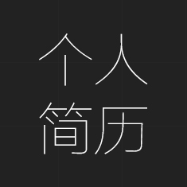

-
个人简历-赵守涛
 -

赵守涛
我叫赵守涛，89年轻小伙。做了一年半web前端开发，因为喜欢前端的技术而一直投身前端开发。
我毕业于山东省聊城第二职业学院，大专，这都不重要。重要的是，我喜欢学习。
-
web前端
2014.7-2016.1
中农金旺（北京）科技有限公司
学生
2006.6-2009.9
山东省聊城市第二技术学院
!
前端工程师
2016.4-未来
期望就职于一家“靠谱”的企业

-
JS
Html5
Css3
.Net
sql server
框架
-
项目经验
青岛永旺东泰商业有限公司
网上商场类的网站，页面简洁大方，实现pc端客户对商品的购买以及对人们关心的一些热卖品的推荐等。依据设计稿使用DIV+CSS制作相应的静态页面和jQuery动态效果。
项目中职责是web前端开发
诸葛投资网
诸葛投资网是一个以达到规范行业服务、降低投资者风险的金融投资实战三方服务平台。
项目中职责是web前端开发
普惠众信
金融投资类的商业网站，主要内容有：普惠金融，普惠财富，安全保障等页面。实现静态页面及一些简单的功能,并兼容各个浏览器,，通过jQuery实现各种交互效果
项目期间主要负责web前端开发+前后端交互
-
CONTACT联系我
- 赵守涛
- 18611770635
- 690337924@qq.com
- 北京市